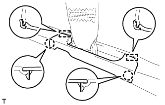
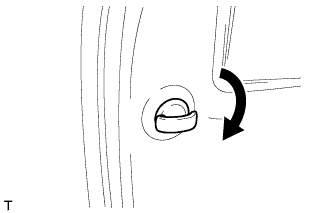
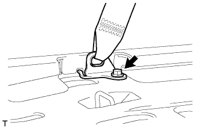
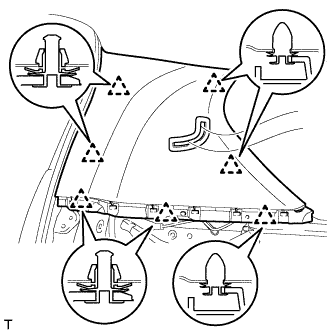
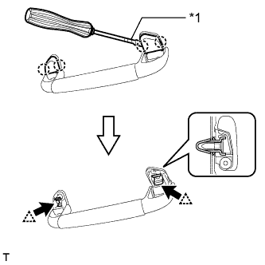
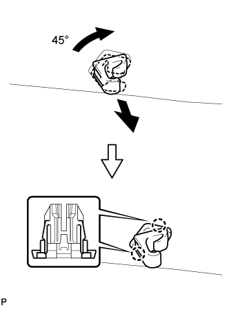
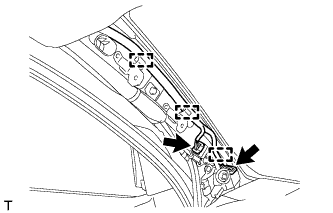
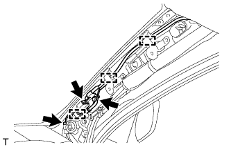
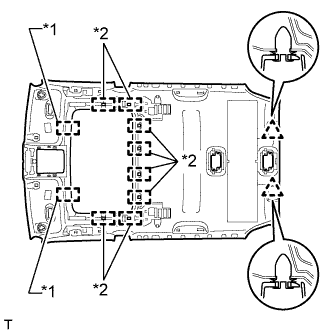
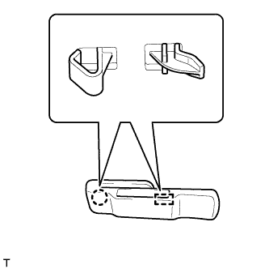

ОБИВКА КРЫШИ (для 3-х дверной модели) > СНЯТИЕ |
| 1. ОТСОЕДИНИТЕ ПРОВОД ОТ ОТРИЦАТЕЛЬНОГО ВЫВОДА АККУМУЛЯТОРНОЙ БАТАРЕИ |
| 2. СНИМИТЕ ЗАДНЕЕ СИДЕНЬЕ № 1 В СБОРЕ (для моделей с задним сиденьем № 1) |
Для левой стороны:
Снимите заднее сиденье № 1 в сборе (Нажмите здесь).
Для правой стороны:
Снимите заднее сиденье № 1 в сборе (Нажмите здесь).
| 3. СНИМИТЕ ОПОРНУЮ НАКЛАДКУ ЛЕВОЙ ДВЕРИ В СБОРЕ |
 |
Наклейте защитную ленту вокруг опорной накладки двери.
С помощью отвертки освободите 4 фиксатора, 10 захватов и 2 направляющих и снимите опорную накладку двери.
| *1 | Защитная клейкая лента |
| 4. СНИМИТЕ ОПОРНУЮ НАКЛАДКУ ПРАВОЙ ДВЕРИ В СБОРЕ |
| 5. СНИМИТЕ БОКОВУЮ ОБЛИЦОВОЧНУЮ НАКЛАДКУ С ЛЕВОЙ СТОРОНЫ КОЖУХА |
 |
Снимите фиксатор.
Освободите фиксатор и захват и снимите боковую облицовочную накладку кожуха.
| 6. СНИМИТЕ БОКОВУЮ ОБЛИЦОВОЧНУЮ НАКЛАДКУ С ПРАВОЙ СТОРОНЫ КОЖУХА |
| 7. СНИМИТЕ УПЛОТНИТЕЛЬ ОБШИВКИ ПРОЕМА ЛЕВОЙ ПЕРЕДНЕЙ ДВЕРИ |
 |
Снимите уплотнитель обшивки проема передней двери.
| 8. СНИМИТЕ УПЛОТНИТЕЛЬ ОБШИВКИ ПРОЕМА ПРАВОЙ ПЕРЕДНЕЙ ДВЕРИ |
| 9. СНИМИТЕ ЛЕВУЮ ПЕРЕДНЮЮ ЗАГЛУШКУ ВЕРХНЕГО ПОРУЧНЯ № 1 |
 |
С помощью отвертки освободите 2 захвата и снимите переднюю заглушку верхнего поручня № 1.
| *1 | Защитная клейкая лента |
| 10. СНИМИТЕ ПРАВУЮ ПЕРЕДНЮЮ ЗАГЛУШКУ ВЕРХНЕГО ПОРУЧНЯ № 1 |
| 11. СНИМИТЕ ВЕРХНИЙ ПОРУЧЕНЬ № 1 |
 |
Отверните 2 болта.
Освободите 2 захвата и снимите верхний поручень № 1.
| 12. СНИМИТЕ ОБИВКУ ЛЕВОЙ СТОЙКИ ВЕТРОВОГО СТЕКЛА |
 |
Отсоедините 3 направляющие и снимите обивку стойки ветрового стекла.
 |
Для моделей с подушкой безопасности занавесочного типа:
Защитите подушку безопасности занавесочного типа в сборе.
Полностью укройте подушку безопасности куском ткани или нейлона и закрепите края ткани клейкой лентой, как показано на рисунке.
| *1 | Подушка безопасности занавесочного типа в сборе |
| *2 | Клейкая лента |
| *3 | Защитное покрытие |
| 13. СНИМИТЕ ОБИВКУ ПРАВОЙ СТОЙКИ ВЕТРОВОГО СТЕКЛА |
| 14. СНИМИТЕ ЗАДНЮЮ КРЫШКУ В СБОРЕ (для моделей с задней крышкой) |
Снимите заднюю крышку.
| 15. СНИМИТЕ НАКЛАДКУ УСТАНОВОЧНОЙ ПЛАСТИНЫ КОВРИКА |
 |
С помощью отвертки расцепите 2 захвата и снимите накладку установочной пластины коврика.
| *1 | Защитная клейкая лента |
| 16. СНИМИТЕ ЗАДНЮЮ ОПОРНУЮ ПЛАСТИНУ КОВРИКА ЗАДНЕГО ПОЛА |
 |
Выверните 5 винтов.
Освободите 6 захватов и снимите заднюю опорную пластину коврика заднего пола.
| 17. СНИМИТЕ КРЫШКУ ОТВЕРСТИЯ В ЛЕВОЙ ЗАДНЕЙ БОКОВОЙ ОБЛИЦОВОЧНОЙ НАКЛАДКЕ |
|  |
Освободите 2 захвата и 2 направляющих и снимите крышку отверстия в задней боковой облицовочной панели.
| 18. СНИМИТЕ КРЫШКУ ОТВЕРСТИЯ В ПРАВОЙ ЗАДНЕЙ БОКОВОЙ ОБЛИЦОВКЕ |
| 19. СНИМИТЕ ЗАДНИЙ НАПОЛЬНЫЙ КОВРИК В СБОРЕ |
 |
Снимите задний напольный коврик.
| 20. СНИМИТЕ ЗАЩЕЛКУ ОБЛИЦОВКИ БАГАЖНОГО ОТДЕЛЕНИЯ № 1 |
|  |
Снимите защелку облицовочной панели багажного отделения, повернув ее по часовой стрелке.
| 21. СНИМИТЕ КОЛПАЧОК КРЕПЛЕНИЯ ЗАДНЕЙ КРЫШКИ № 1 (для моделей без задней крышки) |
 |
С помощью отвертки освободите 2 захвата и снимите колпачок крепления задней крышки.
| *1 | Защитная клейкая лента |
| 22. СНИМИТЕ ПЕРЕДНЮЮ БОКОВУЮ ОБЛИЦОВОЧНУЮ НАКЛАДКУ БАГАЖНОГО ОТДЕЛЕНИЯ (для моделей с задней крышкой) |
 |
С помощью отвертки освободите 2 захвата и снимите переднюю боковую облицовочную накладку полки багажного отделения.
| *1 | Защитная клейкая лента |
| 23. СНИМИТЕ КАРМАН В ЗАДНЕЙ БОКОВОЙ ОБЛИЦОВКЕ |
 |
Наклейте защитную ленту вокруг кармана в задней боковой облицовочной панели.
С помощью отвертки освободите 6 захватов и 2 направляющих и снимите карман в задней боковой облицовочной панели.
| *1 | Защитная клейкая лента |
| 24. СНИМИТЕ НАКЛАДКУ КРЕПЛЕНИЯ ПОЯСНОГО РЕМНЯ БЕЗОПАСНОСТИ |
 |
Освободите 3 захвата и снимите накладку крепления поясного ремня безопасности.
| 25. СНИМИТЕ ЛЕВУЮ БОКОВУЮ ОБЛИЦОВОЧНУЮ ПАНЕЛЬ ПОЛКИ БАГАЖНОГО ОТДЕЛЕНИЯ В СБОРЕ |
 |
Выверните болт и отсоедините напольное крепление ремня безопасности переднего сиденья.
 |
Выверните болт и отсоедините напольное крепление ремня безопасности заднего сиденья № 1.
Выверните 3 болта и 2 винта.
Освободите 9 захватов и 12 фиксаторов и снимите боковую облицовочную панель полки багажного отделения.

| 26. СНИМИТЕ ПРАВУЮ БОКОВУЮ ОБЛИЦОВОЧНУЮ ПАНЕЛЬ ПОЛКИ БАГАЖНОГО ОТДЕЛЕНИЯ В СБОРЕ |
 |
Выверните болт и отсоедините напольное крепление ремня безопасности переднего сиденья.
|  |
Выверните болт и отсоедините напольное крепление ремня безопасности заднего сиденья № 1.
Выверните 3 болта и 2 винта.
Расцепите 9 захватов и 12 фиксаторов.
Отсоедините разъем и снимите боковую облицовочную панель полки багажного отделения.

| 27. СНИМИТЕ ЛЕВУЮ НАРУЖНУЮ ПЕРЕДНЮЮ ОБЛИЦОВОЧНУЮ ПАНЕЛЬ В СБОРЕ |
 |
Переместите регулятор плечевого крепления переднего ремня безопасности в крайнее нижнее положение.
Выверните болт.
Открепите 2 фиксатора и 2 направляющие.
Пропустите напольное крепление ремня безопасности переднего сиденья через переднюю боковую облицовочную панель и снимите переднюю боковую облицовочную панель.
| 28. СНИМИТЕ ПРАВУЮ НАРУЖНУЮ ПЕРЕДНЮЮ ОБЛИЦОВОЧНУЮ ПАНЕЛЬ В СБОРЕ |
| 29. СНИМИТЕ ЛЕВУЮ ЗАДНЮЮ БОКОВУЮ ОБЛИЦОВОЧНУЮ ПАНЕЛЬ В СБОРЕ |
|  |
Освободите 7 фиксаторов.
 |
Освободите 4 захвата и 2 направляющих, пропустите напольное крепление ремня безопасности заднего сиденья № 1 через заднюю боковую облицовочную панель и снимите заднюю боковую облицовочную панель.
| 30. СНИМИТЕ ПРАВУЮ ЗАДНЮЮ БОКОВУЮ ОБЛИЦОВОЧНУЮ ПАНЕЛЬ В СБОРЕ |
| 31. СНИМИТЕ ВЕРХНИЙ ПОРУЧЕНЬ В СБОРЕ |
|  |
С помощью отвертки расцепите 4 захвата и снимите 2 крышки верхних поручней.
| *1 | Защитная клейкая лента |
Отцепите 2 фиксатора и снимите верхний поручень.
Снимите 2 фиксатора с кузова автомобиля.
| 32. СНИМИТЕ ЗАДНИЙ ЛЕВЫЙ ВЕРХНИЙ ПОРУЧЕНЬ |
 |
С помощью отвертки расцепите 4 захвата и снимите 2 крышки верхних поручней.
| *1 | Защитная клейкая лента |
Отцепите 2 фиксатора и снимите верхний поручень.
Снимите 2 фиксатора с кузова автомобиля.
| 33. СНИМИТЕ ЗАДНИЙ ПРАВЫЙ ВЕРХНИЙ ПОРУЧЕНЬ |
| 34. СНИМИТЕ КРЫШКУ КРОНШТЕЙНА ЛЕВОГО ПРОТИВОСОЛНЕЧНОГО КОЗЫРЬКА |
 |
Освободите 4 захвата и снимите крышку кронштейна противосолнечного козырька.
| 35. СНИМИТЕ КРЫШКУ КРОНШТЕЙНА ПРАВОГО ПРОТИВОСОЛНЕЧНОГО КОЗЫРЬКА |
| 36. СНИМИТЕ ЛЕВЫЙ ПРОТИВОСОЛНЕЧНЫЙ КОЗЫРЕК В СБОРЕ |
 |
Выверните 2 винта и снимите козырек.
| 37. СНИМИТЕ ПРАВЫЙ ПРОТИВОСОЛНЕЧНЫЙ КОЗЫРЕК В СБОРЕ |
| 38. СНИМИТЕ ДЕРЖАТЕЛЬ ПРОТИВОСОЛНЕЧНОГО КОЗЫРЬКА |
|  |
Поверните держатель козырька примерно на 45° и вытяните его, как показано на рисунке.
Расцепите 2 захвата и снимите держатель противосолнечного козырька.
| 39. СНИМИТЕ ЛАМПУ ИНДИВИДУАЛЬНОГО ОСВЕЩЕНИЯ |
 |
Освободите 4 фиксатора.
Отсоедините разъем и снимите лампу индивидуального освещения.
| 40. СНИМИТЕ КРЫШКУ ДАТЧИКА ДОЖДЯ (для моделей с датчиком дождя) |
 |
Расцепите 2 захвата и снимите крышку датчика дождя.
| 41. СНИМИТЕ КРЫШКУ ДЕРЖАТЕЛЯ СТОЙКИ ВНУТРЕННЕГО ЗЕРКАЛА ЗАДНЕГО ВИДА (для моделей с зеркалом с электрохромным покрытием) |
 |
Отсоедините 2 захвата и сдвиньте крышку держателя стойки внутреннего зеркала заднего вида в направлении, указанном на рисунке стрелкой.
 |
Освободите 2 захвата и снимите крышку держателя стойки внутреннего зеркала заднего вида.
| 42. СНИМИТЕ ЛАМПУ ОСВЕЩЕНИЯ САЛОНА № 1 В СБОРЕ |
Снимите лампу освещения салона № 1 (Нажмите здесь).
| 43. СНИМИТЕ ЛАМПУ ОСВЕЩЕНИЯ САЛОНА № 2 В СБОРЕ |
Снимите лампу освещения салона № 2 (Нажмите здесь).
| 44. СНИМИТЕ ОБИВКУ КРЫШИ В СБОРЕ |
 |
Для моделей с зеркалом с электрохромным покрытием:
Отсоедините разъем внутреннего зеркала.
 |
Для моделей с датчиком дождя:
Отсоедините разъем датчика дождя
 |
Для моделей с люком:
Отсоедините разъем приводного механизма.
|  |
Отсоедините 2 разъема и 3 зажима от левой стойки ветрового стекла.
|  |
Выверните болт.
Отсоедините 2 разъема и 3 зажима от правой стойки ветрового стекла.
Отсоедините разъем и 3 зажима от левой задней стойки.
Отсоедините разъем и 4 зажима от правой задней стойки.
 |
Для моделей без люка:
Освободите 2 фиксатора.
|  |
Для моделей с люком:
Освободите 2 фиксатора, 2 направляющих и 8 креплений.
| *1 | Направляющая |
| *2 | Фиксатор |
Снимите обивку крыши с двери багажного отделения, как показано на рисунке.
| 45. СНИМИТЕ НАКЛАДКУ ПЛЕЧЕВОГО КРЕПЛЕНИЯ ЛЕВОГО ПЕРЕДНЕГО РЕМНЯ БЕЗОПАСНОСТИ В СБОРЕ |
 |
Освободите 4 захватов пластины плечевого крепления переднего ремня безопасности и сдвиньте пластину плечевого крепления переднего ремня безопасности в направлении стрелки, чтобы снять ее.
| 46. СНИМИТЕ НАКЛАДКУ ПЛЕЧЕВОГО КРЕПЛЕНИЯ ПРАВОГО ПЕРЕДНЕГО РЕМНЯ БЕЗОПАСНОСТИ В СБОРЕ |
| 47. СНИМИТЕ ОБЛИЦОВКУ ЛЕВОГО БОКОВОГО БРУСА КРЫШИ № 1 |
Освободите 5 фиксаторов.
Срежьте 5 фиксаторов и снимите облицовку бокового бруса крыши.
| *a | Место среза |
Снимите 5 фиксаторов с кузова автомобиля.
| 48. СНИМИТЕ ОБЛИЦОВКУ ПРАВОГО БОКОВОГО БРУСА КРЫШИ № 1 |
| 49. СНИМИТЕ ЗАДНЮЮ РАСПОРНУЮ ДЕТАЛЬ ЛЕВОГО БОКОВОГО БРУСА (для моделей без подушки безопасности занавесочного типа) |
Освободите 4 захвата и снимите заднюю распорную деталь бокового бруса.
| 50. СНИМИТЕ ЗАДНЮЮ РАСПОРНУЮ ДЕТАЛЬ ПРАВОГО БОКОВОГО БРУСА (для моделей без подушки безопасности занавесочного типа) |
| 51. СНИМИТЕ ЗАДНЮЮ РАСПОРНУЮ ДЕТАЛЬ ЛЕВОГО БОКОВОГО БРУСА № 2 |
Снимите фиксатор.
Освободите 4 захвата и снимите заднюю распорную деталь бокового бруса.
| 52. СНИМИТЕ ЗАДНЮЮ РАСПОРНУЮ ДЕТАЛЬ ПРАВОГО БОКОВОГО БРУСА № 2 |
| 53. СНИМИТЕ ДЕРЖАТЕЛЬ ЧАШКИ В ЛЕВОЙ БОКОВОЙ ОБЛИЦОВКЕ ПОЛКИ БАГАЖНОГО ОТДЕЛЕНИЯ |
Освободите 4 захвата и снимите держатель чашки в боковой облицовке полки багажного отделения.
| 54. СНИМИТЕ ДЕРЖАТЕЛЬ ЧАШКИ В ПРАВОЙ БОКОВОЙ ОБЛИЦОВКЕ ПОЛКИ БАГАЖНОГО ОТДЕЛЕНИЯ |
| 55. СНИМИТЕ КРЮК ПЛЕЧЕВОГО КРЕПЛЕНИЯ РЕМНЯ БЕЗОПАСНОСТИ ЛЕВОГО ЗАДНЕГО СИДЕНЬЯ |
|  |
Освободите захват и направляющую и снимите крюк плечевого крепления ремня безопасности заднего сиденья.
| 56. СНИМИТЕ КРЮК ПЛЕЧЕВОГО КРЕПЛЕНИЯ РЕМНЯ БЕЗОПАСНОСТИ ПРАВОГО ЗАДНЕГО СИДЕНЬЯ |
| 57. СНИМИТЕ БОКОВУЮ ОБЛИЦОВОЧНУЮ НАКЛАДКУ В ЗАДНЕЙ ЧАСТИ КУЗОВА |
 |
Отцепите 2 захвата и снимите боковую облицовочную накладку.
| 58. СНИМИТЕ КРЫШКУ ГНЕЗДА В ЗАДНЕЙ БОКОВОЙ ОБЛИЦОВОЧНОЙ ПАНЕЛИ (для моделей с запасным колесом) |
Освободите 7 захватов и 3 направляющих и снимите крышку гнезда в задней боковой облицовочной панели.
| 59. СНИМИТЕ ПРАВУЮ БОКОВУЮ ОБЛИЦОВОЧНУЮ НАКЛАДКУ ПОЛКИ БАГАЖНОГО ОТДЕЛЕНИЯ (для моделей без запасного колеса) |
Поверните 2 ручки и освободите замок.
Освободите 7 захватов и 3 направляющие и снимите боковую облицовочную накладку полки багажного отделения.